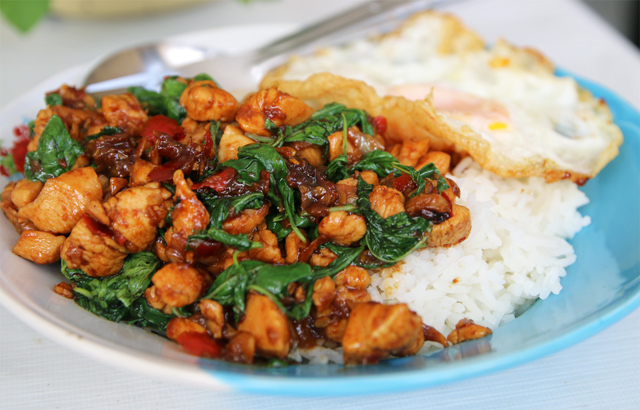
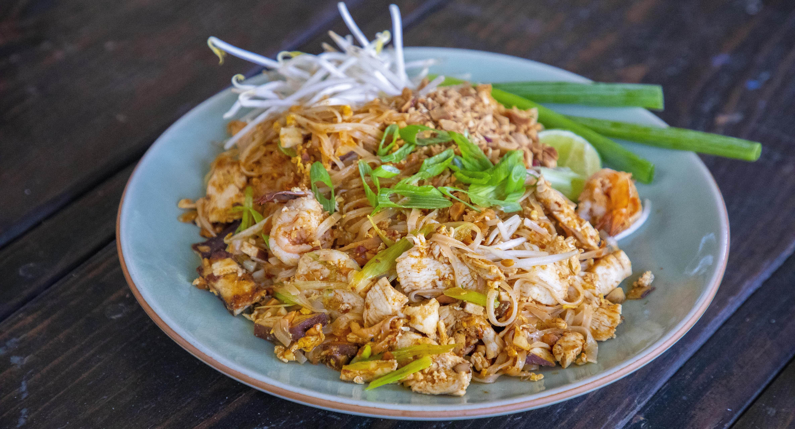

Thai Food
Introduction
Thai food tends to be vibrant dishes that are very flavoursome. The essential ingredients include aromatic herbs such as lemongrass, ginger, peanuts, basil, chilli peppers, fish sauce, kaffir lime leaves, coconut milk etc. These dishes usually harmonise sweet, sour, spicy and salty flavours.(Long, 2023)
Pad Kra Pao
This is one of the Thai peoples favourite dishes. It is a stir fry of meat (usually ground meat), basil, chillies, rice and a fried egg on top. This dish can also contain ingredients, such as green beans, onions, oyster sauce and soy sauce.(Chongchitnant, 2022)
Gaeng Keow Wan Gai (Green Curry)
This is one of Thailands signature dishes. It is a blend of green curry paste and coconut cream. This dish usually includes ingredients, such as rice, chicken, chillis, Thai eggplant, bamboo shoots, basil, lemongrass, lime leaves, cumin, soy sauce, oil, fish sauce, lime juice, coriander, and sugar.(Wiens, n.d.)

Pad Thai
This dish is stir-fried rice noodles and commonly served in their street food. This is fried in a wok and is typically made with rice noodles, vegetables, shrimp, peanuts, scrambled eggs, bean sprouts etc.(Debczak, 2021)
